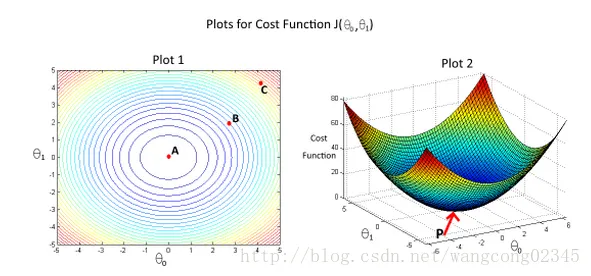

第 6 题
根据一名学生大一获得 A 等成绩的科目数 x（包括 A−、A 和 A+），预测他大二获得 A 等成绩的科目数 y。表中每一行是一条训练样本。线性回归模型为 hθ(x) = θ₀ + θ₁x，m 表示样本数。 上表给出的训练样本数 m 是多少？
上表给出的训练样本数 m 是多少？
查看计算步骤与答案
- 把表头与数据分开。表头的 x 和 y 只是列名。
- 实际数据是 (3, 2)、(1, 2)、(0, 1)、(4, 3)，每行是一条样本。
- 共有 4 行数据，因此 m = 4。
只知道一套房子的面积，怎样画一条直线估计价格？先写出怎样预测，再用历史数据给这条线打分。
「单变量」表示只有一个输入特征。x 是这个输入，y 是真实答案，hθ(x) 是模型的预测值，读作「用这组参数对 x 的预测」。符号 θ（读 theta）表示模型里需要学习的系数。
hθ(x) = θ₀ + θ₁xθ₀ 是截距，表示输入为 0 时的预测值。θ₁ 是斜率，表示输入每增加 1 单位，预测值会变化多少。x(i) 和 y(i) 中的 i 是样本编号。
单条样本误差为预测值减真实值。正负误差直接求和会互相抵消，平方后都变成非负数，较大误差也会得到更高代价。
J(θ₀, θ₁) = [1/(2m)] ∑i=1m (hθ(x(i)) − y(i))²m 是训练样本数，∑ 表示对每条样本求和，除以 m 相当于取平均，再乘 1/2 使求导时的系数简洁。J 最小的位置不受常数 1/2 影响。
把每一种 θ₀、θ₁ 对应的代价想成一张地形图的高度。等高线连接代价一样的参数点。平方误差的参数图是凸的，像一个碗或带平底的槽。
梯度描述代价增大最快的方向，梯度下降沿反方向走。学习率 α 控制步长，太小走得慢，太大可能越过谷底。如果 J=0，则所有训练误差平方都为 0。新样本的误差仍需单独检验。
两条样本是 (1, 4)、(2, 6)。若 h(x)=1+2x，预测值与代价分别是多少？
预测值为 3 和 5。误差都是 −1，平方和是 2，J=2÷4=0.5。
先独立作答，再展开解析核对。计算题可以在纸上列式。
根据一名学生大一获得 A 等成绩的科目数 x（包括 A−、A 和 A+），预测他大二获得 A 等成绩的科目数 y。表中每一行是一条训练样本。线性回归模型为 hθ(x) = θ₀ + θ₁x，m 表示样本数。
上表给出的训练样本数 m 是多少？
使用第 6 题的训练集。代价函数 J(θ₀, θ₁) = [1/(2m)] ∑ᵢ₌₁ᵐ (hθ(x⁽ⁱ⁾)−y⁽ⁱ⁾)²。求 J(0, 1)。
沿用第 6 题的线性回归模型，令 θ₀=−1，θ₁=2。求 hθ(6)。
代价函数J(θ₀,θ₁)与θ₀,θ₁的关系如图2所示。“图1”中给出了相同代价函数的等高线图。根据图示，选择正确的选项（选出所有正确项）

答案 A、E
等高线中心 A 对应曲面最低点 P。学习率合适时，从 B 做梯度下降会朝 A 移动，因此 A、E 正确。C 点离中心更远，D 误把 A 说成最大值。
题册勘误 原答案字母 A、E 正确，其中一行旁注误把 P 对应到 C。
对于一个线性回归任务（例如预测房价），假设能找到一组参数 θ₀、θ₁，使训练集上的代价 J(θ₀, θ₁)=0。哪些陈述正确？（选出所有正确项）
答案 B
代价是非负平方项的和，和为 0 说明每一项都为 0，因此每个训练样本的预测都等于真实值。A 的参数可以取其他值；C 否认了可能的完全拟合；D 把训练表现直接外推到新样本。
预测值代公式。代价对所有误差平方求和，再除以 2m。J=0 仅说明训练样本全部拟合。